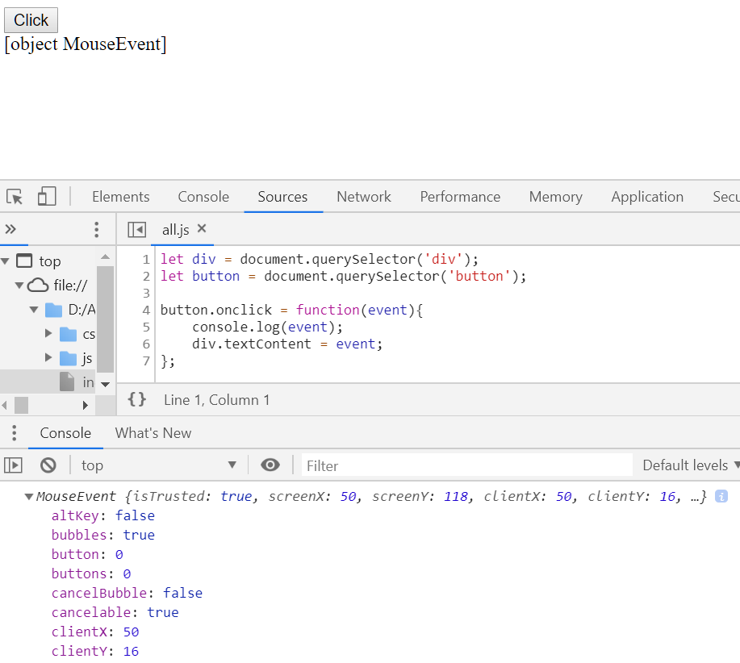
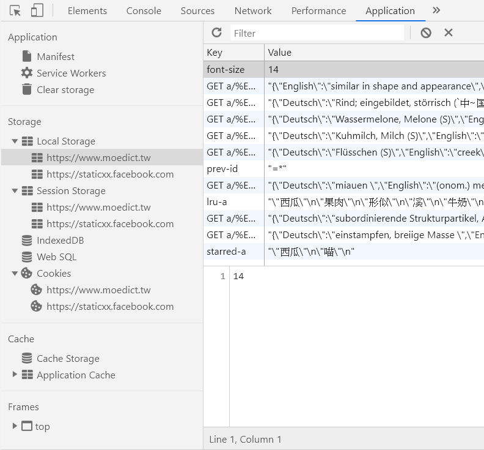
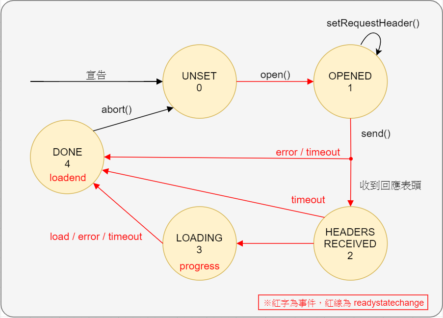
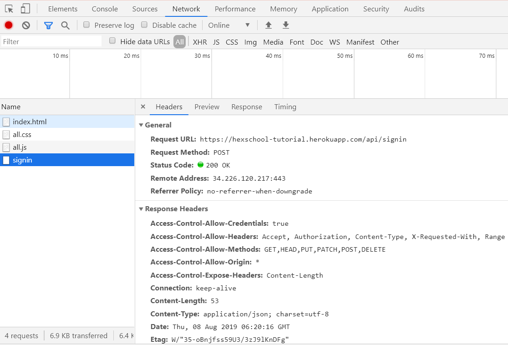

本文為觀看六角學院「JavaScript 入門篇 - 學徒的試煉」的筆記。
由於前半段章節為程式基本觀念，所以只會紀錄一些關鍵字。
本文使用不少 Codepen 嵌入區塊，瀏覽器可能會很卡，請讓它跑XD”
Visual Studio Code
使用 VScode 作為開發環境，其內建 JS 的 Emmet 。
如果希望撰寫 JavaScript 時能有 HTML 或其他語言的快捷效果，可以到 File > Preference > Setting > Extensions > Emmet > setting.json 中加上下面的設定：
1 | "emmet.triggerExpansionOnTab": true, |
六角的介紹影片：VSCode 介紹 - 編譯 Sass、除錯、插件介紹
Variable
- 宣告變數
- var：作用域在 function 中的變數，不建議使用。
- let：作用域在 block 中的變數
- const：常數
- 未賦值的型別為 undefined
如果用 const 宣告陣列或物件，由於陣列和物件是 call by reference ，裡面的內容依然可以被修改。希望內容不能被修改的話可以使用 Object.freeze( 變數 ) 。
Function
Hoisting
- 函式跟 var 宣告（不包含賦值）會提升到作用域的最上面
- 函式優先於變數
Loop
JSON格式
利用JSON格式的資料做迴圈的練習。
- 練習資源：
- 政府資料開放平台
- 行政院環境保護署。環境資源資料開放平臺
- 台北市政府資料開放平台
- 高雄市政府資料開放平台
各縣市大概都有自己的資源。
- 美化格式相關插件：
組字串小技巧
在字串中需要放入變數的話可以用以下方式：
1 | let name = '小明' |
DOM
什麼是DOM
選取 DOM 節點
- .getElementById(/id/)
- .getElementsByClassName(/class/)
- .getElementsByName(/name/)
- .getElementsByTagName(/HTML tag/)
- .querySelector(/selector/)：回傳第一筆
- .querySelectorAll(/selector/)：回傳陣列
新增 DOM 節點
- innerHTML：利用文字直接新增 HTML 原始碼，效能較佳
- createElement() + appendChild()：新增節點物件，安全性較佳
Event
什麼是Event
一些發生在 HTML 元素中的狀況稱為事件， JavaScript 可以針對這些事件做出反應。
事件有可能是瀏覽器或使用者引起的，例如點擊滑鼠、輸入文字等。
可以藉由參數來接收 Event object ，觀察並使用裡面的屬性。

事件綁定
建議使用 addEventListener() 在 HTML 元素上綁定事件。
因為像 onclick 只能綁定一個事件，而 eventListener 可以綁定多個。
Onclick 等屬性也可以寫在 HTML 標籤裡，但缺乏彈性也不夠安全。
Event Capturing / Bubbling
addEventListener 的第三個參數， true 時為 Event Capturing ， false 為 Event Bubbling 。前者會讓監聽由外往內，後者是由內往外。
See the Pen JavaScript 10.89 Event Capturing / Bubbling by C.L.Huang (@clhuang224) on CodePen.
使用 event.stopPropagation() 可以停止冒泡事件，使監聽只發生在該事件作用的對象上。可以用 event.target.nodeName 得知事件作用的標籤名稱。
另外 event.preventDefault() 則是取消預設行為，例如點選連結會自動跳到頁面最上方。
常見應用
除了 click 以外，還有許多常見的應用。
Change
當 element 被改變時觸發的事件；例如 <select> 被選到新選項時就會觸發。
See the Pen JavaScript change 事件練習 by C.L.Huang (@clhuang224) on CodePen.
KeyCode
藉由鍵盤事件中的 keyCode 屬性，來做出不同的反應。
例如用上下左右鍵控制元素。
See the Pen JavaScript keyCode 、 Canvas 練習 by C.L.Huang (@clhuang224) on CodePen.
Focus / Blur
藉由焦點改變事件做出不同的反應，例如表單驗證。
See the Pen JavaScript Blur 、 Focus 疑問 by C.L.Huang (@clhuang224) on CodePen.
Mousemove
可以設計滑鼠移動到元素上時的反應。
See the Pen JavaScript Mousemove 練習 by C.L.Huang (@clhuang224) on CodePen.
mouseEvent 裡面包含不同的座標，其基準點有所差異：
- screenX/Y ：以螢幕左上角為基準
- clientX/Y ：以瀏覽器左上角為基準
- pageX/Y ：以網頁左上角為基準
用 position:fixed 的特性讓元素跟著滑鼠走：
See the Pen JavaScript 滑鼠座標應用 by C.L.Huang (@clhuang224) on CodePen.
大範圍監聽
如果有一堆東西要監聽，可以監聽父元素，並在綁定的 function 中判斷作用對象，讓程式碼更簡潔。
判斷事件作用的節點可以看 nodeName 屬性，它代表節點的名稱，比 tagName 提供更多資訊。
Local Storage
Local storage 是 HTML5 提供的本地儲存空間，只要沒有特意去刪除，會一直存在在電腦中。
想要查看各網域使用 local storage 的情形，可以看開發者工具：

關於 local storage /session storage/ coockie ，以下兩篇文章介紹得很清楚：
儲存 / 讀取
將資料儲存到 local storage 及取出的方法如下：
1 | // 儲存 |
如果資料是陣列，需要轉換成JSON格式；取出後也要轉回來才能使用：
1 | let arr = [{ |
另外關於 array 的操作可以參考這篇：Array - JavaScript | MDN
HTML5 data-* 屬性
當需要特別標記 HTML 元素時（例如撲克牌有自己的花色、顏色，放在 class 又很難用時……），可以用 data-* 自訂屬性；用法如下：
1 | <div data-color="black" data-suit="spade" data-number="1" id="spade1" class="card"></div> |
在 JavaScript 中要使用的時候用 .dataset 就可以取得自訂屬性的 list ，再選擇需要的屬性。
1 | // 取出黑桃一的花色 |
在 CSS 中利用中括號來選擇帶有特定屬性的元素：
1 | .card[data-color="black"]{ |
To-do list 範例
可以將待辦事項存入 local storage 中，讓使用者每次開啟網頁仍能讀取上次的內容。
See the Pen JavaScript 簡易備忘 by C.L.Huang (@clhuang224) on CodePen.
BOM
參考文章：
JavaScript入門系列：BOM和DOM筆記 | 快樂學程式
Browser Object Model 是一個以物件達成 JavaScript 與瀏覽器溝通的結構，各家瀏覽器有著不同的實作，沒有統一的規範。其中最上層的全域物件為 window ，內有許多 member data 和 method 。例如：
1 | window.sreen; // 當下螢幕尺寸 |
history.back() / .forward()
可以利用 history 中的 forward() 和 back() 製作上 / 下一頁的功能，其會自動跳到使用者離開的位置。
1 | document.querySelector('#backButton').addEventListener('click',function(){ |
window.open()
除了將 location.href 直接更改，在當前視窗跳轉到特定網頁以外，開啟新分頁。與 <a> 不同的地方在於使用者無法按右鍵複製網址，適合用在較隱私的資料上。
1 | window.open(strUrl, strWindowName, [strWindowFeatures]); |
滿版效果
利用 innerHeight 的值與 resize 事件，使進站畫面恆為滿版：
See the Pen JavaScript 動態滿版效果 by C.L.Huang (@clhuang224) on CodePen.
AJAX
什麼是AJAX
Asynchronous JavaScript and XML 簡稱為 AJAX ，為 2005 年時由 Jesse James Garrett 所發明的術語，描述一種使用數個既有技術的方法。這些技術包括 HTML 或 XHTML 、 CSS 、 JavaScript 、 DOM 、 XML 、 XSLT 以及最重要的 XMLHttpRequest 物件。透過這些技術向伺服器請求所需的資料，能快速、即時更動介面及內容，不需要重新讀取整個網頁，讓程式更快回應使用者的操作。雖然其名稱包含 XML ，但實際上資料格式可以由 JSON 代替，進一步減少資料量，即為 AJAJ （ asynchronous JavaScript and JSON ）。
參考文章：
XMLHttpRequest
可以透過 XMLHttpRequest 物件實現 AJAX 的概念。
基本操作
首先宣告一個物件，用 open() 指定 request 類型、位址和是否同步。
如果 request 為 POST ，就需要用setRequestHeader() 在 request 表頭裡加上一些內容。
接著用 send() 將 request 送出。
可以利用 .onload 指定 load 事件（資料下載完畢）時要觸發的 function 。
1 | let xhr = new XMLHttpRequest(); |
Ready State
.readyState 可以看出物件目前的狀態：
| 值 | 狀態 | 意義 | 可以做的事 |
|---|---|---|---|
| 0 | UNSENT | 物件已建立。 | 呼叫 open() ，指定存取方式、位址及是否同步。 |
| 1 | OPENED | 已呼叫 open() 。 | 呼叫 setRequestHeader() 設定表頭。 |
| 2 | HEADERS_RECEIVED | 已呼叫 send() ，且收到回應表頭（ response header ）。 | |
| 3 | LOADING | 下載回應資料中。 | |
| 4 | DONE | 操作完成，可能成功或失敗。 |

Status
可以從 .status 觀察 HTTP 狀態碼，瞭解資料傳遞的情形。
在 Chrome 開發人員工具 > Network 中也可以看到各請求的狀態碼。
Content Type
依據後端的需求， Request header 裡可以用 Content-type 指定不同的資料格式，傳送資料時就要使用指定格式的字串。
| Content-type | 資料字串 | 備註 |
|---|---|---|
| application/x-www-form-urlencoded | ‘key=value&key=value’ | <form> 預設的傳送方式。 |
| application/json | JSON.stringify( 變數 ) |
用開發人員工具觀察封包
從 Chrome 開發人員工具 > Network 中可以看到網頁所傳遞的資料，點開來可以觀察 Request 和 Response 的內容。

GET 範例
See the Pen JavaScript XMLHttpRequest 練習 by C.L.Huang (@clhuang224) on CodePen.
POST 範例
See the Pen JavaScript XTMLHttpRequest POST 練習 by C.L.Huang (@clhuang224) on CodePen.
CORS
Cross-Origin Resource Sharing 是一種存取跨網域資料的機制。一般來說由於資安的考量， XMLHttpRequest 遵守 same-origin policy ，而只能存取同網域的資料；如果要存取跨網域的資料，就需要 CORS 。
Request 有可能會因為後端沒有提供跨網域共享，而存取失敗。可以用 test-cors.org 網站測試遠端資料是否開放跨網域存取。
參考文章：
其他
用 ECMAScript 6 的語法可能會有相容性的問題，可以用 Babel 編譯成具相容性的語法。